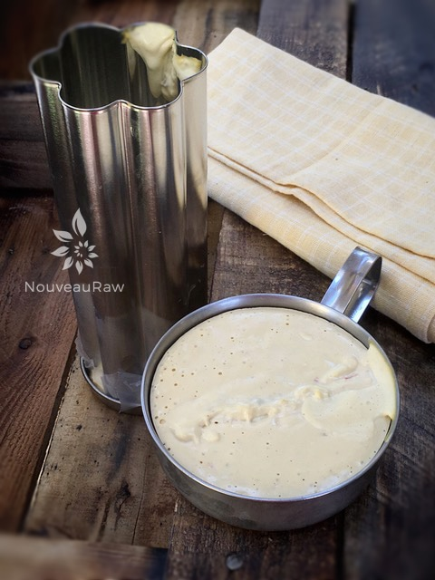

Pepper Jack Cheese

~ raw, vegan, gluten-free ~
This vegan cheese recipe is not 100% raw. I used agar which has to be dissolved in boiling water/liquid. If you are opposed to using a “cooked” ingredient then please check out the other raw nut cheese recipes that require fermenting/culturing. But if you want to give this recipe a try, let me explain as to why certain core ingredients are used.
A cheese with an attitude!
Water or nut milks ~ water is needed to create the agar gel. This requires boiling. Nut Milk can be used for a more authentic flavor, but it is not required. You can use water instead. Once you heat the nut milk it will no longer be a raw product.
Raw Cashews ~ Raw cashews are very popular because they have a neutral taste and create a very creamy texture. Other nuts and some seeds can be used instead but will give the recipe a different flavor and sometimes, texture.
Agar Powder ~ Agar is a sea vegetable. It is a magical ingredient in this recipe because it gives the cheese the structure. Without it, your cheese will…. well will be more of a sauce or dip. Nothing wrong with that it just depends on how you want to use the cheese.
For more information on agar, you can read about it here. You can use agar flakes instead of the powder but you’ll have to use 3 times as much. It is also more difficult to dissolve the agar flakes in the small amount of water called for in this recipe. I don’t recommend it, but it can be done. Flakes are also harder to measure in volume, as they tend to fluff up.
Tahini ~ Tahini is made from ground sesame seeds. It gives the cheese a hardier and more convincing flavor.
One really fun thing to do with these types of cheese is to make them in different sized and shaped containers. You have to move quickly when pouring but if you have them all lined up and ready to beforehand, it is easy.
- 1/2 cup almond milk or water
- 1/2 cup cashews, soaked 2 + hours
- 3 Tbsp lemon juice
- 2 Tbsp tahini butter
- 1/4 cup nutritional yeast
- 1 tsp Himalayan pink salt
- 1 1/2 tsp onion powder
- 1/2 tsp garlic powder
- 3/4 cup diced peppers (jalapeno, Fresno, yellow pepper, or some combination)
Agar slurry:
Preparation:
Cheese base:
- After soaking the cashews, drain and rinse well. Add to a high-powered blender along with the water (or nut milk), lemon juice, tahini, nutritional yeast, salt, onion powder and garlic powder. Blend until creamy. Stop occasionally and test the cheese for any grittiness by rubbing it between your thumb and finger. If you feel grit, keep blending until you don’t. Have this step done before adding the agar gel.
- Prepare the cheese container (s). Have them set in place and ready for action!
- For the flower shape that you see in the photo to the right, I used (this) mold.
Agar gel:
- In a small saucepan whisk the agar into the 1 cup of water bringing it to a boil. Reduce heat to low and simmer for about 5 minutes, stirring frequently until the agar is completely dissolved.
Putting it together:
- Start the blender up, getting a vortex in the cheese sauce. A vortex looks like a mini-tornado, this helps pull ingredients down into the mix and not just pool on top.
- Once the vortex is going, slowly drizzle in the agar gel and blend until fully combined. Add peppers and just blend for maybe 10 seconds. We want the peppers to show but you need to move quickly since the agar will start to thicken.
- Working quickly, pour the cheese batter into the mold (s). Tap the containers slightly on the countertop to work out any bubbles.
- Place in the fridge uncovered till firm. This usually only takes 15-30 minutes.
- Enjoy! Eat within 5-7 days.

I choose these two “containers” just to show you that you can use about anything to mold the cheese in. Here I used a bread tin from Pampered Chef and an old camping coffee cup. :)


© AmieSue.com